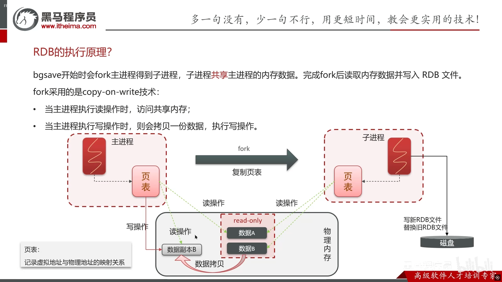
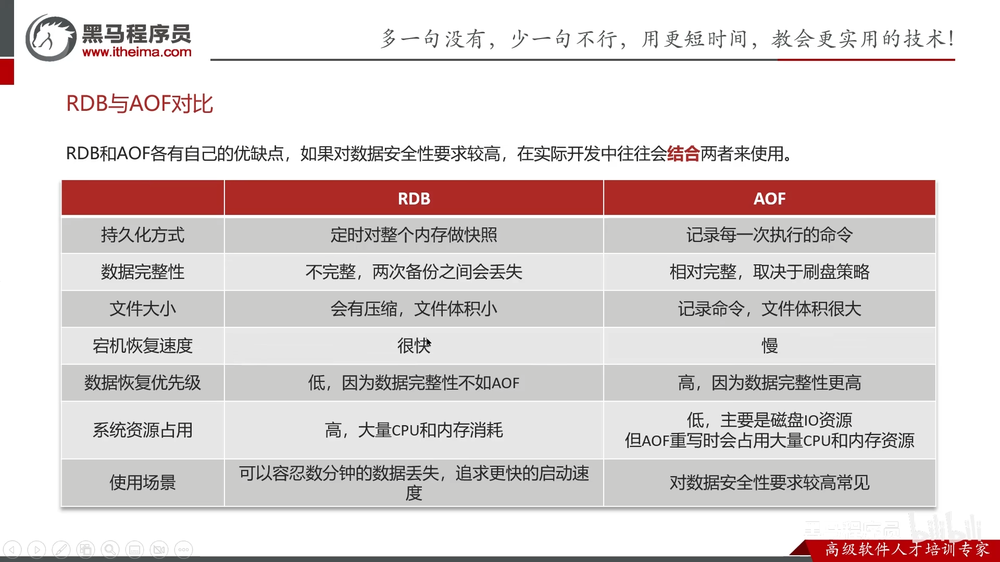
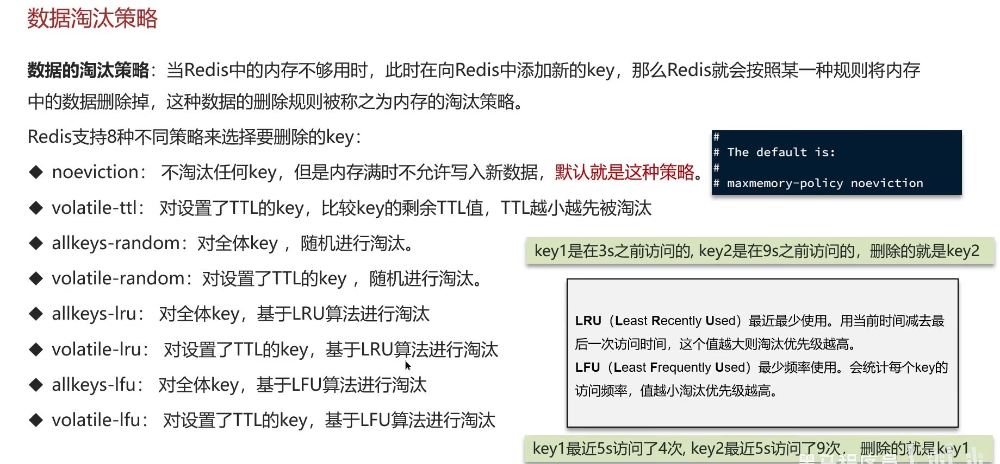
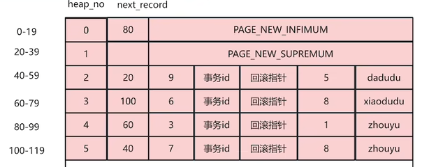
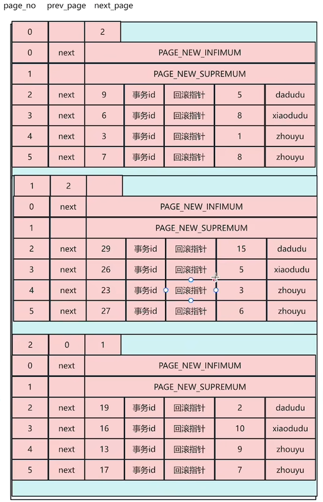
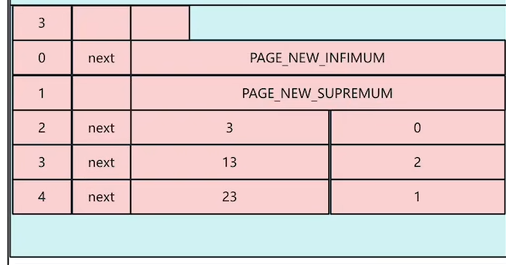
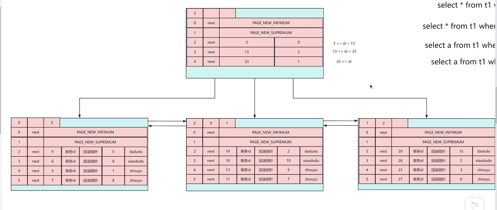

redis 事务拿不到中间值
可能存在的问题：
全称 redis Database Backup file
主动备份
自动备份（可再 redis.conf 中修改配置）

子进程即为备份进程，为了避免数据不一致。进行备份时物理内存中的数据为只读模式，写操作会让数据复制副本，主进程对副本操作与读写

AOF 默认关闭，在 conf 文件里开启
触发方式：


对于一张表中，新加入的的数据如果是按 id 排序并不会每次加入后都进行排序，而是用 next_record 存下一个数据的地址，每次加数据只需要改这个


（两张图连一起看）
开头加一行内容显示下一页的位置，用 next_page*16kb
最后一张才是头文件，第几张的 id 范围都已确定，方便查询
可以视为

数据查询
SELECT：用于从表中查询数据
FROM：指定查询的表
WHERE：过滤查询条件
GROUP BY：按列分组统计
示例
SELECT
user_id,
COUNT(id) AS order_count, -- 统计每组的订单数量
SUM(amount) AS total_amount -- 计算每组的总金额
FROM orders
GROUP BY user_id;
结果：
user_id | order_count | total_amount
100 | 3 | 900
101 | 1 | 150
| user_id | order_count | total_amount |
|---------|-------------|--------------|
| 100 | 3 | 900 |
| 101 | 1 | 150 |
不要 GROUP BY user_id 有什么影响？
答：不要会导致 id 和 order_count 统计的是全部的。并且 user_id 会是随机一条，或者报错
HAVING：对分组结果进行过滤（类似 WHERE，但用于分组后）
ORDER BY：对结果排序（ASC 升序、DESC 降序）
LIMIT：限制返回结果的数量
DISTINCT：去除重复值
数据操作
INSERT：插入数据到表中（配合 INTO 使用）
UPDATE：更新表中的数据（配合 SET 和 WHERE）
DELETE：删除表中的数据（配合 FROM 和 WHERE）
VALUES：在 INSERT 中指定插入的值
SET：在 UPDATE 中指定要修改的列和值
表结构操作
CREATE：创建数据库、表、索引等（如 CREATE TABLE）
ALTER：修改表结构（如添加列 ALTER TABLE ... ADD）
DROP：删除数据库、表、索引等（如 DROP TABLE）
TRUNCATE：清空表中所有数据（保留表结构）
RENAME：重命名表或数据库
其他常用关键字
AS：定义别名（如 SELECT name AS username）
DISTINCT：去重且非 null（如 SELECT DISTINCT category，搜索不重复且不为 null 的 category）
ALL：返回所有结果（默认，与 DISTINCT 相反）
CASE：条件判断（类似编程语言中的 if-else，如 CASE WHEN ... THEN ... ELSE ... END）
EXISTS：判断子查询是否返回结果（如 WHERE EXISTS (SELECT 1 FROM ...)）
in:是一个用于条件判断的运算符，主要作用是判断某个值是否在指定的集合中
聚合函数
SELECT COUNT(*) FROM customers; -- 总记录数
SELECT COUNT(DISTINCT email) FROM customers; -- 去重后的邮箱数
日期函数
SELECT DATE(order_time) AS order_date, DATE_FORMAT(order_time, '%Y-%m-%d %H:%i') AS fmt_time FROM orders;
字符串函数(不常用)
SELECT CONCAT(LEFT(phone, 3), '****', RIGHT(phone, 4)) AS hide_phone FROM users;
select unique_id,name from Employees left join EmployeeUNI on EmployeeUNI.id=Employees.id
select name from{
select count(managerId)
from Employee
where count >5
group by managerId
}
这是错的，下面是对的：
-- 查询管理了超过5名员工的管理者姓名
SELECT e.name
FROM Employee e
WHERE e.id IN (
-- 子查询：找出管理人数 >5 的 managerId
SELECT managerId
FROM Employee
GROUP BY managerId
HAVING COUNT(managerId) > 5 -- 用 HAVING 过滤分组后的计数结果
);
如果按我的思路应该是这样的：
select Name
from (
select Manager.Name as Name, count(Report.Id) as cnt
from
Employee as Manager join Employee as Report
on Manager.Id = Report.ManagerId
group by Manager.Id
) as ReportCount
where cnt >= 5
当压力测试时，某个接口查询时间过长